- 读：分页读取，并对重复读做去重，避免陷入死循环
- 写 / 删 / 搜：写入前给 diff 预览；支持按内容搜索文件
- 沙箱边界：判定路径是否在工作区内，越界操作走 Safety 审批
用户主动发送的消息是豆包理解兴趣、驱动推荐和创作激发的核心信号，但单轮消息常常上下文残缺、噪声密集、意图模糊
interview deck / self intro
字节跳动 · Data-抖音-Flow · 2025.11 - 至今
用户主动发送的消息是豆包理解兴趣、驱动推荐和创作激发的核心信号，但单轮消息常常上下文残缺、噪声密集、意图模糊
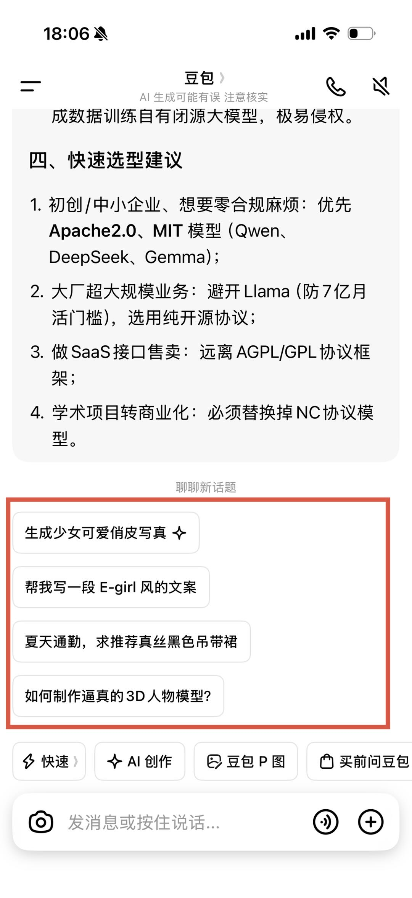
通用问答式 LLM 的调研痛点：指标不全上下文不可控细节缺失追问繁琐且易发散难沉淀学习笔记
面向个人科研工作流：构建本地可控的研究助理工作台，覆盖论文调研论文精读仓库 / 代码定位自动实验
动态注册文件、Shell、Python、Web、Memory、Todo 与 Delegate；大输出转 artifact、长上下文自动压缩，让长任务持续推进
自动改代码、运行 train / eval、读取 metrics、保留改进与总结失败；预算、超时、monitor / stop 和固定评测共同约束实验边界
不止生成摘要，而是围绕研究价值、实验可信度、可复现性和关键实现路径形成可复用判断
Agent 可交互式新增并热加载工具，把稳定流程沉淀为 Skill；GUI 支持划词提问和分支对话
围绕归档机制、种群更新、多样性保持与理论运行时间，分析多目标演化算法为什么有效、何时能够获得可证明加速
贡献：证明重利用归档集中的解可以提升帕累托前沿分布均匀性，并缓解目标空间与决策空间不一致的问题。
贡献：分析随机更新保留非精英解的探索优势，并引入 Archive 保存帕累托最优解，同时提升搜索效率与解集质量。
贡献：首次从理论上分析 SPEA2 的期望运行时间，并提出可迁移到其他多目标算法的一般性分析定理。
贡献：针对同一目标向量对应多个决策空间解的问题，引入决策空间多样性更新机制，并证明其能够显著加速收敛。
贡献：设计双种群 MOEA 框架，分别承担探索与利用，并从理论上证明双种群机制能够显著增强搜索探索能力。
贡献：面向含局部最优的多目标整数空间，理论分析 Aging 策略与重尾分布算子的作用机理及其搜索效率收益。
贡献：从理论上证明使用 Archive 保存精英解能够为多目标演化算法带来可证明的搜索加速。
冲突包括准确性、多样性、用户偏好和安全性
GDPO NVIDIA ICML'26： 先归一化再加权能先消除不同奖励尺度/方差的影响，让权重真正表达“偏好重要性”
GD^2PO Qwen 2026-6：按奖励维度解耦筛选 rollout：选用奖励一致性更高的样本作为置信的 rollout 样本参与训练
Panacea Neurips'26：把 LoRA 的适配参数改造成可随“偏好权重/目标权重”动态生成或调节的 Pareto LoRA，使同一个基座模型能根据不同目标权衡，在多个优化目标之间切换到对应的 Pareto 最优响应
如果强调转化率，可以采用几何平均
对于强约束优化，可以使用拉格朗日乘子法增加 margin/惩罚函数
Projection Optimization ICML'26：对于明确的目标，可以使用目标逼近方法，例如可以将多目标向量映射到凸包上，根据投影点反推权重；
ArmoRM ACL'24：根据问题类型动态路由 Reward 权重，而不是使用固定的权重组合
KiMi M3：根据问题难度调整思维链长度的惩罚
冲突包括召回率和准确率、内容多样性、转化率等目标
MIND CIKM'19：将相关性、兴趣探索和长尾覆盖建模为多路候选，不同人群动态分配召回权重
Pantheon CIKM'25：提出 Iterative Pareto Policy Optimization (IPPO)，用强化学习迭代搜索个性化的 Pareto 最优排序，直接用精排模型的多任务头作为输入，替代整个公式化融合排序
PreferRec 2026：发现用户间的 Pareto 偏好结构是可迁移的，显式建模并跨用户迁移 Pareto 偏好，减少每个用户的探索成本
字节 Agentuna：字节跳动推出的 Agent 驱动的推荐系统自迭代框架，通过智能体自动完成超参数搜索、策略调优和实验验证，替代人工调参，实现推荐链路的自动化优化
快手 AgentX：落地的多 Agent 推荐系统自迭代系统，由 Brainstorm（生成实验提案）、Developing（编码实现）、Evaluation（A/B 验证）、SGPO（语义梯度自进化）四个 Agent 闭环
任务完成率与推理长度、工具成本、响应时间、安全风险等需要权衡
Tree of Thoughts (ToT)、rStar-Math：CoT 路径搜索，使用 MCTS 权衡探索和利用，使用多目标过程奖励函数优化 CoT
KiMi K3：CoT 长度优化，在不限制推理效果的前提下控制 CoT 长度
GEPA ICLR'26 Oral：在不断使用过程中构造更适配用户的 Agent，方式是根据经验不断构造总结对应 Skill 并优化（Hermes Agent），同时平衡三个维度：质量（成功率）、效率（Token 消耗）、泛化（未见任务表现）
Karpathy autoresearch、pi-autoresearch（开源插件）：核心模式：改代码 → 跑基准 → 看指标 → 保留 / 回滚 → 重复；但是基准可能包含多个目标，每个版本需要 Archive 进行搜索优化；
Sakana AI，Nature；AutoResearchClaw；EvoScientist：多 Agent 闭环 + 贝叶斯优化实验设计 + 渐进式 Agent 树搜索 + 实验管理 Agent
项目描述：将用户每日主动发送的消息归纳为层次化 Memory，作为用户兴趣表征，辅助推荐、创作激发等下游任务
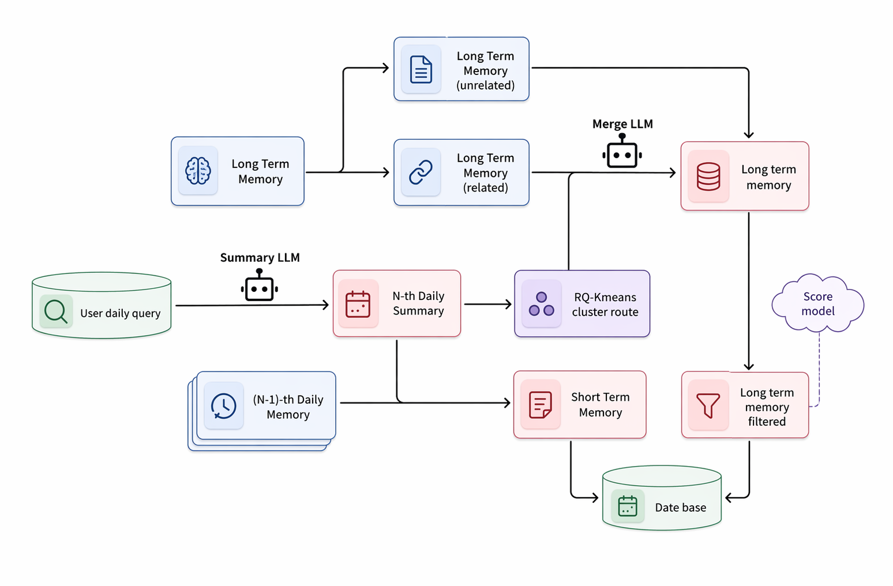
Memory overall pipeline · 点击放大意图筛选使用意图识别模型筛出图片 / 视频创作消息，排除非创作型请求
信息提取将每日、多轮相同意图的消息合并为单个兴趣点，降低重复表达影响
噪声过滤过滤工具向、恶搞向、政治向兴趣，保留可服务推荐和创作激发的偏好信号
兴趣聚类路由按照 RQ-Kmeans 码本路由，并根据 cluster 大小动态调整分类粒度
高阶兴趣归纳将相邻或相关兴趣凝练为代表性更强、泛化性更好的高阶兴趣点
先用相关性 + 个性化筛出蒸馏数据，再以 GRPO 将生成质量继续对齐真实业务目标
个性化与全面性由 LLM-as-Judge 打分；筛出的可信样本进入两阶段蒸馏
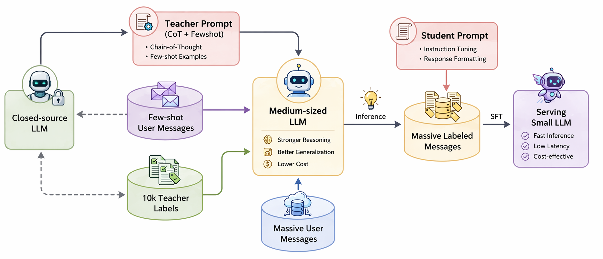
点击放大流程图同一 Prompt 采样 \(G\) 条回答，HCRS 先构造奖励 \(R_i\)，先计算各目标组内优势，再加权
\(r_1\)规则约束：格式、错误字符、重复与长度
\(A_2\)相关性：LLM-as-Judge 判断兴趣是否贴合输入
\(A_3\)个性化：主动创作精排模型分数
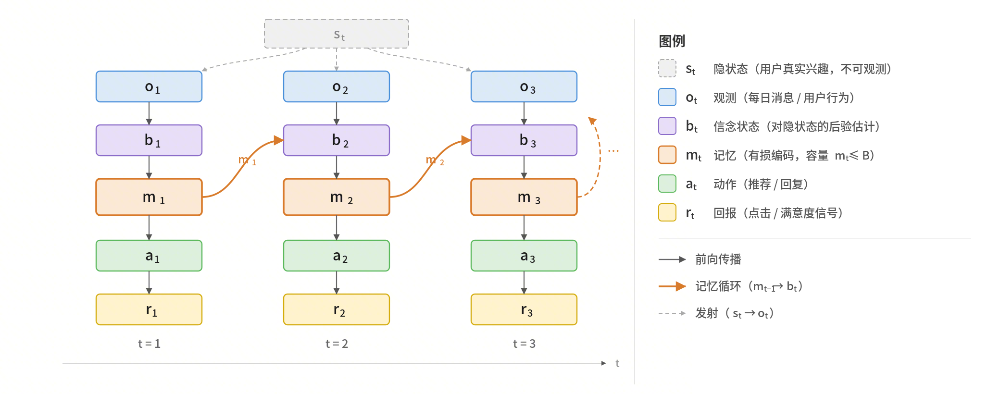
失败原因：Memory 更新轨迹没有进入训练；update 并非真正 on-policy，也感知不到未来 Memory 状态。
失败原因：多轮 update 共用一个终端信号，非可验证奖励下信用严重混淆；完整轨迹连 32 卡也难负担。
基于 Doubao Creation Memory 生成个性化主动创作消息，注入推荐候选池并在线分发，激发用户创作心智
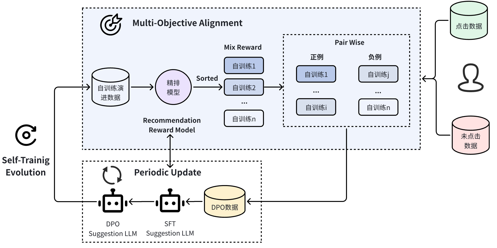
DPO preference construction · 点击放大从海量创作中挖掘可迁移的创作 Skill，构建生成 → 评估 → 改进的自演化闭环
数据筛选 每日筛选 5,000 创作未分发消息、清理数据集、保留最终成图与热度信号
Skill, Variant 路由 LLM 进行粗粒度路由到题材 Skill 大类，画风 Variant 通过 RQ-Kmeans 聚类固定
多维目标候选库 skill 的优化目标是多个 variant 下的分数；每一个 variant 的优化目标是判别器的多维度评分
父代选择 通过 tournament selection 选择 skill 模版；在对应 variant 下随机选择模版；生成图片/视频进行打分
变异扰动 如果分数比 user 高则跳过；否则使用 mutation 对 variant 和 skill 模版进行原子化修改，在mini batch 中进行评估
种群更新 如果相比于 variant 候选库帕累托分数提升，且在 skill 更换 variant 后效果稳定，则保留到种群中，删除一个最差模版
评估方式 生成图与用户真图混合盲池，skill 放入判别器，公平打分
评分维度 质量、构图、色彩、细节、文字排版、投产 readiness
回流改进 判别器不仅给出分数，而且给出判别原因
不是一次性写 Prompt，而是挖掘、生成、盲评、回流 report；每轮 wave 都能自动触发再挖掘和二次精修
Skill 只学跨题材通用能力；Variant 身份由后端聚类固定，避免 LLM 因画风、主体差异乱建分类
字符 3-gram 相似聚类 + 18 条 / 16000 字符预算装箱，多层并发把“一簇一次”压到 batch 级请求
围绕豆包创作社区精排模型，主导完成 4 次结构 / 目标级 LR 上线，从特征交叉、任务依赖、消费深度和用户序列兴趣四个维度系统升级精排模型
痛点：下游稀疏互动目标学习不足、特征交叉浅、缺少停留时长等深度消费刻画、缺少用户历史行为序列建模
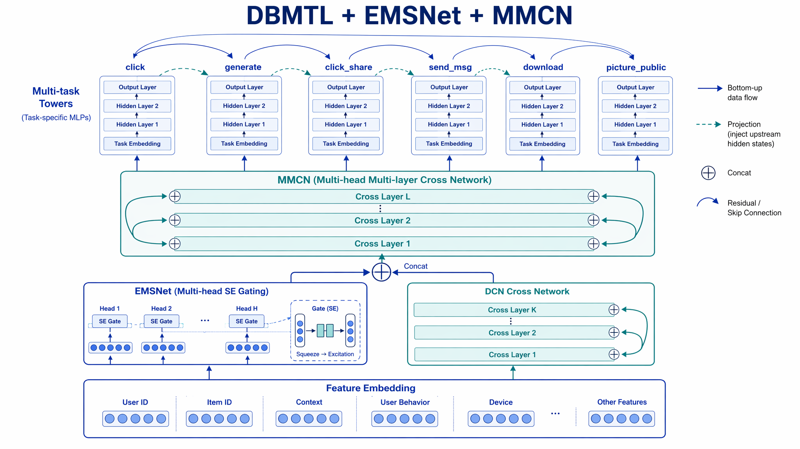
结构图 · 点击放大DBMTL 建模 click → generate 漏斗依赖，缓解下游任务样本选择偏差与数据稀疏
EMSNet 多 head gate 自适应缩放 embedding，兼顾 SENet 的 slot 选择和 DCN-M 的高效性
MMCN 以交叉残差机制扩展主 Tower，保证 scaling up 的表达能力与稳定性
离线 UAUC：click +1.18%、generate +1.67%、share +2.64%、download +2.67%，稀疏目标提升更明显
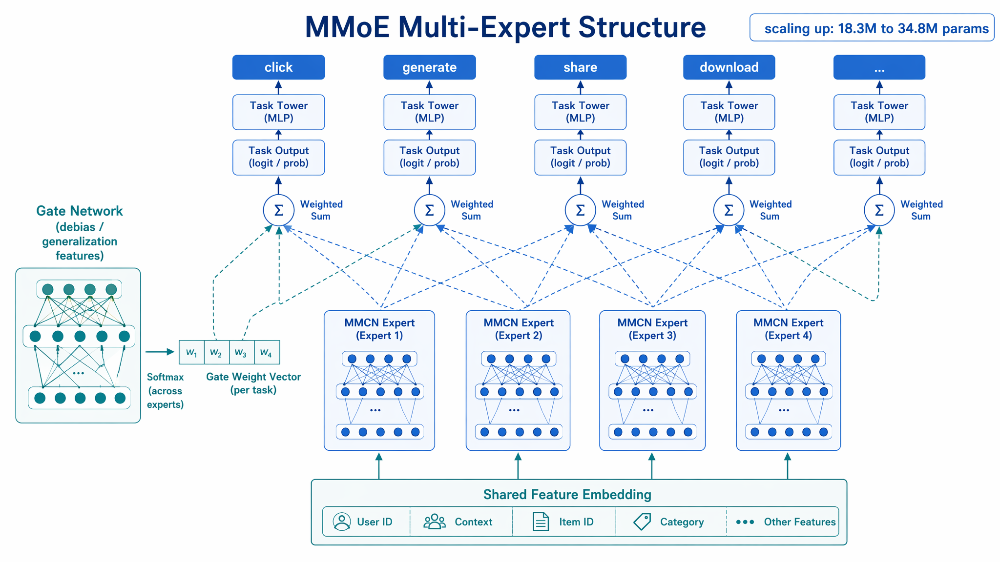
结构图 · 点击放大单共享主干 MMCN → 4 个 MMCN Expert，参数量 18.32M → 34.8M
Expert 维度为 [1536, 768, 510, 255, 126]，cross / reduce 使用 \(4\cdot\tanh(x/4)\) 稳定激活
Gate 输入使用 uid、年龄、城市、gid、author、quality 等消偏泛化特征，每特征单独切片
消融显示 gate 输入换成 expert 同源输入后 AUC / UAUC 全面下降；简化 EMSNet / DCN 底座后 UAUC 下降 1% - 3%
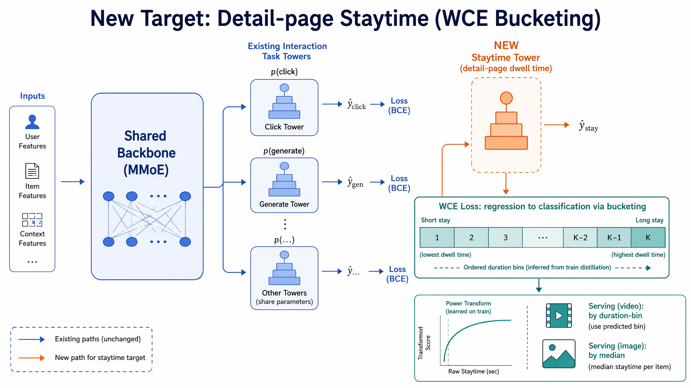
结构图 · 点击放大复用现有精排样本 / 模型 / 特征，新增 template_staytime 目标塔
WCE Loss 将停留时长离散化为有序分桶分类，提升对长尾时长与消费深度的表达
视频作品按时长分生效；图片作品按视频时长中位数给固定分，降低图片时长噪声
离线 staytime 回归 AUC 0.80933；加入后 Top50 生视频作品占比 12% → 24%
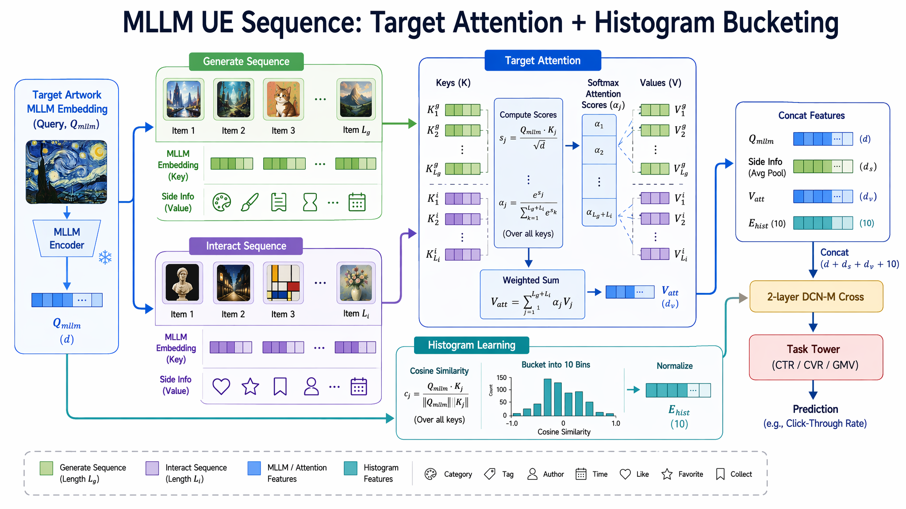
结构图 · 点击放大新增用户近 30 天做同款序列与互动序列，截断 50 条，接入 MLLM embedding 和 Side Info
Target Attention 直接用作品多模态 UE 作 Query、序列 MLLM 作 Key、Side Info 作 Value
Histogram Learning 将 cosine 相似度分到 10 个桶，刻画用户兴趣分布的宏观形态
V1 仅 DIN → V2 DIN + 直方图分桶逐级提升，离线 AUC diff +0.13% - +0.39%
一个可控的本地研究型 Agent：Agent Loop 驱动，中间件扩展、上下文治理、工具隔离、安全边界与父子任务协同
题目 / 规则 / 完成标准 · 只有用户能改
当前解题直觉 · Planner 可演化
摘要 / 计划 / 短期结论 · 仅父进程写
survey / plan / run 报告 / 失败日志/ todo_state
辩论全文 / 原始输出 / trace 快照
| 能力 | Plan | Attempt | Conclude |
|---|---|---|---|
| 读 / 搜文件 | ✓ | ✓ | ✓ |
| 写文件 | ✕ | ✓ | ✓ |
| 跑命令 | ✕ | ✓ | ✕ |
| 查技能 / 派子任务 | ✓ | ✓ | ✕ |
计划 · 执行 · 总结分开——越权调用被 tool_guard 当场拒绝
分层 Skill 沉淀端到端科研链路（发现 → 精读 → 代码溯源）；Cockpit 让研究上下文 可读、可分叉、可审计
面向一个研究方向建立候选池，从 arXiv / OpenReview / HF Papers 等来源收集论文，并按已读历史去重
基于 PyMuPDF 文本抽取 + 页面渲染 保留公式、图表和版面，围绕研究判断而不是摘要复述做精读
把论文中的方法模块映射到真实仓库，做「方法概念 → 类 / 函数 / 配置」的定位式阅读
生成后自评再改稿，或多次采样投票；有效版本通常依赖编译器、单测、检索和环境回报。
Self-Refine
Reflexion
模型造题、写推理链，再用答案正确性或单测筛选，回炉微调。
STaR · Self-Instruct
RFT · ReST · CAI
自评分做 RL、自出题自解题、自写微调指令并执行。
Self-Rewarding
AZR · R-Zero · SEAL
自动搜索提示词、反思轮数、工具配置与 Agent 拓扑，由下游任务分数选优。
STOP seed improver
ADAS
Agent 直接读写自身代码与工具链，用 SWE-bench 等基准作适应度，以 Archive 保留历代变体。
STOP · Gödel Agent
DGM
连“如何改进”本身也被改写，并证明该改写提升整体效用。
Gödel Machine
仅理论
GV-Gap 在首轮自改后接近 0，验证不再比生成容易，多轮蒙特卡洛自改失去梯度。
自我训练本质是 sharpening：强化已有高质量模式，但不会创造模型中不存在的信息。
递归生成数据会遗忘分布尾部，pass@k 与输出熵恶化，最终出现模型坍塌。
裁判与选手同源，系统可能学会模仿高分格式，形成“分数上升、能力不变”。
f = [ 能力, 多样性, 成本, 安全与可监督性, 跨基准泛化 ]
工具 / 环境 token 常占轨迹一半以上
推理与训练两套 kernel，同权重不同 logprob
verifier 有缺陷 + reward hacking
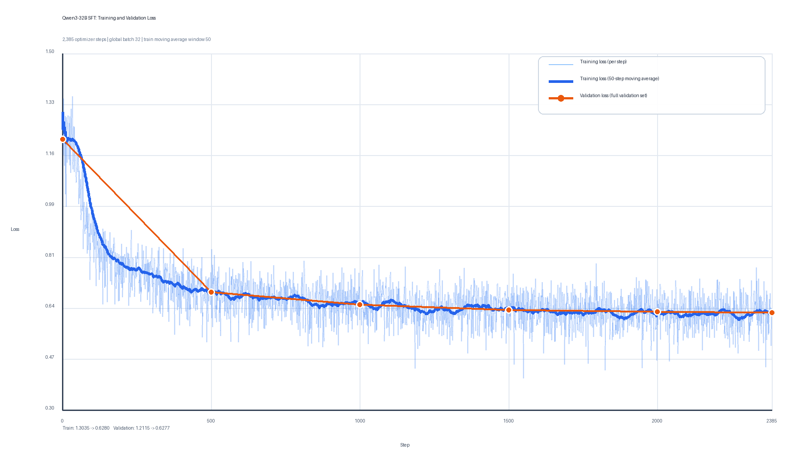
Gemini 3 Pro 生成伪思维链和结构化答案；答案侧使用 LLM-as-Judge 清洗幻觉、格式异常与超长重复，并用 Cohen's κ 与 Spearman 相关验证 Judge 可信度。
输入清洗后由模型端到端判断噪声；训练和验证严格分离，同 batch 长度相近，并通过 10 类硬过滤移除状态链不一致、Markdown 污染和输出契约失败。
Train loss 约 1.3035 → 0.6280，Validation loss 约 1.2115 → 0.6277。曲线用于确认冷启动稳定，不代表最终业务效果。
先在较短轨迹上建立稳定的 Memory Update → Suggestion → Reward 闭环，降低训练初期的方差与资源压力。
再切换到真实长程样本，让模型面对早期信息遗忘、状态污染和长期偏好保留问题。
这里按照真实轨迹长度分成两个阶段：先保证短程闭环可学习，再验证长程状态能力；下一页进一步比较单步、整轨迹和随机窗口三种信用分配方案。
覆盖 30 万用户：20 万 × 3 个月、10 万 × 6 个月；用户月均活跃约 4.65 天，保留明显长尾。
基础画像 + 长期兴趣 + 7 天短期兴趣；白名单、条件保留和强制排除共同过滤，长期每类 ≤3、最多 8 类，短期 ≤8 并与长期去重。
NFKC、全半角和零宽字符清洗；消息、前缀、比例指令与循环片段去重；8 类异常进入独立审计 JSONL，保持可追溯。
从活跃 1–15 天用户按比例采样 1 万 UID；MiniHash + Jaccard 跨样本去重，答案经 Judge 拒绝采样，训练/验证严格分离。
76,320 条训练样本，即 38,160 个 Memory + SSuggestion 操作对；验证集 2,400 条。
RL 与 SFT 不同源，丢弃 advantage 差距过小样本；格式和长度奖励只作轻量约束，持续审计 reward hacking。
l=0.01、h=0.04；固定 K 防止靠多生成 Suggestion 刷最高分。
与最近 14 天标题联合判断来源、形式、内容多样性与新颖度；同时检查人名、IP 侵权、色情低俗和工具类噪声。Judge 需通过 Spearman 与 Cohen's κ 校验。
调用下游 API 对生成 Prompt 打分，使 Memory 与 Suggestion 不只满足文本格式，而是对真实承接质量负责。
所有 Reward 先归一到 [0,1]；每个 reward 单独计算 advantage，当前方案不除 std，再按业务权重求和，避免先混合导致量纲与方差互相污染。
Ray + Megatron-LM + SGLang
4 Workers × 8 GPUs
PP=1 · CP=1 · Sequence Parallel
max_tokens_per_gpu=16384 · dynamic microbatch
β1=0.9 · β2=0.95 · weight decay=0.1
cosine decay · 3% warmup
不再假设“短轨迹更容易”。从真实长轨迹随机取起点 Mi，固定窗口长度 K，并重复 τ 次；训练覆盖轨迹早、中、晚期真实 Memory 状态，包括已经变长、变脏的状态。rollout 成本由 K 固定，与用户累计天数无关。
每个 step 都执行 Update Memory → Generate Suggestion → Reward，因此信号密度提高约 K 倍。中间奖励不是人工构造的 Memory 质量分，而是 Memory 被下游生成真实消费后得到的效果，奖励源头仍然是唯一业务目标。
从同一 Mi 并行采样 N 条轨迹，并只在相同位置做归一化。μi+k 就是该位置的平均水平，不需要 critic；同一用户、同一天、同一起点让绝对点击率和任务难度等策略外因素被对冲，σ 归一化后才能跨位置加权。
Memory update 会改变之后所有状态，所以接收从当前位置到窗口末端的折扣优势；Suggestion 给定 Memory 后只影响当前输出，本质是单步 bandit，只接收当前 A。相比终局分过度平摊或每步只看自身，这个分工更符合真实因果。
Memory update 动辄上千 token，单个异常 importance ratio 容易把算术平均和整条梯度带偏。几何平均配合序列级 sign 对 outlier 更不敏感，提供更大的可用 KL 预算并减少训练塌陷。
C 创作兴趣、T 操作偏好、N 无信息噪声；V / Q / R 为低俗、违法、真人公众人物或侵权角色等风险内容，完全忽略。同一消息可同时包含 C 和 T。
“汉服 / 汉服文创 / 汉服海报”归并为一个题材兴趣；“海报”进入交付形式，避免近义表达拆成多条后循环互证、虚高频次。
[兴趣]、[操作偏好]、[动机]、[规避]、[可推荐]、[预算]+[状态]。兴趣总数 ≤12，每分面 ≤5；每条兴趣记录强度、次数、出现天数和首末日期。
综合复现天数、跨度、频率、最近性、profile 一致性和兴趣簇支持。单日首次通常为弱，跨日复现可升中，长期多次才考虑强；一次最多变一档。
低活用户的弱兴趣不自动过期。只有明确否定、确认误提取，或容量淘汰为更强证据腾位时才删除；旧兴趣消失必须声明 MERGE / EVICT / KILL。
<think> 记录证据与变更理由，随后输出 <decision>update|no_update</decision>；只有 update 时才输出完整 <memory>。
一致时取交集作为最高优先级锚点；冲突时优先真实行为。强兴趣优先用、中兴趣正常用、弱兴趣只做低风险验证；年龄和性别只用于合规适配。
intersection、memory、profile、recommend、operation、hypothesis、explore。弱连接只能标作 hypothesis，不能冒充已经验证的用户行为。
先剔除空泛、近义、证据重复和画面差异不足的候选，再按剩余质量决定数量，不为凑数输出；多样性看主体、场景、动作、画风、构图与用途组合。
节日前 3–10 天最多使用一条节日提案；recent_titles 只拦截逐字重复或“主体+场景+画风”完全相同，不惩罚用户持续喜欢的方向。
文生图模式全部输出文生图；图生图优先编辑类但可保留文生图；auto 根据操作偏好与候选质量自由决定。
文生图固定“生成{画面内容}”且 ≤15 字；图生图固定“上传{照片类型}·{具体改动}”且 ≤16 字。不用广告词，也不暴露监视感。
每条 150–250 字单段，按摄影写实、插画或图生图段式撰写；抽象词落成具体视觉，并按动机调整构图，结尾严格写输出比例或保持原图比例。
<think> 包含数量决策、候选步骤、兴趣归因与 context 使用；随后输出 1–8 组 Title / Desc，组间空行，不编号。
这一阶段的职责：把稳定画像和行为 Memory 变成差异足够、画面可执行、合规且能直接投放的个性化创作提案。
分开训练，信用分配截断，梯度断开，并非 on policy 优化
分训：Memory ↔ 人类摘要偏好
单模型：Memory ↔ Title / Desc 终端回报
只有当“好摘要”恰好是下游创作的充分统计量时，两者才等价；本任务还需要画风、题材、新鲜度与可 prompt 化细节。
终端结果定义“什么值得写进 Memory”，不再依赖人工先写一套摘要规范。
MemAgent · arXiv:2507.02259 把损失从 group × token 扩展到 group × conversation × token，让多次 Memory 调用共享终端回报。
SUPO · arXiv:2510.06727 将含 I 次压缩的轨迹拆成 I+1 条子轨迹并共享 reward，支持“中间状态为最终任务服务”的训练逻辑。
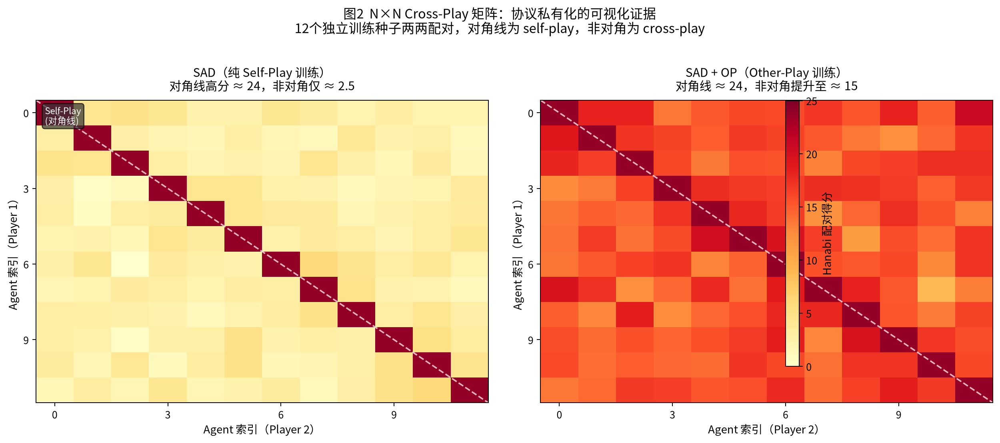
Lowe et al., AAMAS 2019 将 emergent communication 分成 positive signaling 与 positive listening，证明二者可以分离：发送者的符号很稳定，接收者的行为却完全不受消息影响。
On the Pitfalls of Measuring Emergent Communication · arXiv:1903.05168Hanabi 中 SAD 的 self-play 为 23.97 / 25，独立策略 cross-play 只有 2.52；加入 Other-Play 后 cross-play 提升到 15.32，加 AUX 后达到 22.07。
Hu et al., Other-Play for Zero-Shot Coordination · arXiv:2003.02979同一个模型写 Memory、也由同一个模型读取 Memory，就像给自己写便签：编码习惯和解码习惯来自同一套参数。它不能自动保证内容正确，但显著减少跨模型协议错配。
若单轮错配率 ε=5%，10 轮后剩约 60%；20 轮后只剩约 36%。这不是论文定理，而是解释复利风险的简化模型。
相关长程 Memory 实验报告 F1 从 0.47 降至 0.27，漏检率超过 70%，说明短轨迹可用并不能保证扩轮稳定。
Long-horizon memory training study · arXiv:2605.21768MemAgent · 2507.02259 使用 multi-conv loss；SUPO · 2510.06727 将含多次压缩的轨迹拆分后共享 reward。它们都避免只给最后一步学习信号。
Memory 更新和推荐生成虽然是独立调用，但共享同一条轨迹的最终奖励。这样 Memory 学到的不是“摘要写得漂亮”，而是“对下游 Title / Desc 真正有用”，同时更新分布一致，利于 On Policy RL
| Memory | 1024 token，备选 512 |
|---|---|
| Chunk | 2000–5000 token，自适应切分 |
| 总 Context | 8k：query 1k + chunk 5k + memory 1k + output 1k |
| 最大轮数 | 首版 k≤3，后续 4→8→12 turn |
| Group Size | G=8；显存紧张时 5 |
Teacher 可以使用长 rubric、few-shot 和显式推理步骤；32B / 8B Student 只看与线上完全一致的短 Prompt，并复现 Teacher 输出。
SFT 过训会让输出熵持续下降，随后出现 RL rank inversion：SFT 最优 checkpoint 并不预测 RL 后的最优点。这里的门禁不是“训练 Loss 还能不能降”，而是“模型还有没有可探索的候选”。
几何平均通过 log 变换把乘性的 per-token 信号压缩成加性均值，从而抑制异常值、降低长序列方差、稳定训练信号
训练步数、数据、Reward、种子全部对齐，主判据是动态范围和稳定性；
GMPO 负责 policy ratio 的稳定性；精排、生图 RM、Judge 的尺度冲突仍要交给 GDPO 式逐奖励归一化处理。
同组最大原始分差只有 0.0073，除以 std=0.0026 后却被放大成 2.83 的优势差。Reward 看似上涨，真实质量可能持续下降。
胜率 mean≈0.50、std≈0.37，对小偏置更鲁棒。
缓解目标量纲的冲突，但不会消除冲突本身，权重仍需扫描。
k+1 次调用共享同一轨迹级优势
ω =0.6（暂时未消融）
TRACE log-ratio TD；没有 gold 时，可用同 Prompt 最终奖励最高 rollout 作伪 gold。
for g in 1..G: # G = 8
m_0 = memory_prev
for j in 1..k:
m_j = LLM(prompt_mem(profile, m_{j-1}, chunk_j))
title, desc = LLM(prompt_gen(profile, m_k))
yield k+1 independent samples with the same trajectory_idRollout 时每轮是独立 Prompt。训练时若拼接，会改变 attention mask 与 position id，人为制造训练 / 推理错配。Loss 只落在每次调用的 Assistant token 上。
| temperature | 1.0 |
|---|---|
| top_p | 1.0 |
| repetition penalty | 关闭 |
| tokenization | delta-based |
| W1 · 0–300 | 4 turn · Stage I |
|---|---|
| W2 · 300–800 | 8 turn · I 80% + II 20% |
| W3 · 800+ | 12 turn · I 30% + II 70% |
每次扩轮前保存 checkpoint，扩轮后 100 步密集监控。
这里实际上依旧是普通的 RL 算法，只是 rollout 是 on policy，信用分配是在线的，训练样本本身不为长轨迹
序列由 8B Student 自己生成，32B RL Teacher 只对 Student 实际访问到的状态逐 token 打分；相比稀疏的轨迹奖励，每个 token 都有梯度信号。
Qwen3-32B → Qwen3-8B 词表一致，使用 top-K=64
单轮推理任务中 Qwen3、DeepSeek-R1 与 SOD 支持 OPD；长程 deep-search 的 SCoRe 给出反例。但是本项目各任务可以看作短上下文的 OPD，仅采样时保持一致
| B1 | M8-SFT |
|---|---|
| B2 | M8-Direct-RL |
| B3 | M8-OPD |
| B4 | M8-SFT-then-OPD |
π_rollout 是真正采样的行为策略，π_old 是训练引擎重算的近端策略，πθ 是更新中的策略。只用引擎值或只 recompute 都可能静默退化。
Token-TIS 使用 C=2；IS 权重必须 detach。几何比值只用于拒绝采样。
| |Δlog p| | 健康 ≲1e-3；>1e-2 告警 |
|---|---|
| K3 | <0.001 健康；>0.01 告警 |
| ESS | <0.3 告警；<0.1 停机 |
| F(τ=2) | <1e-4 健康；>0.1 立即停机 |
| Entropy | 归零即塌缩 |
先抽 500 条做人工标注。Memory rubric 的 Spearman ρ ≥0.45、文案成对偏好 agreement ≥0.75，达不到就改 rubric / 换 Judge / 加 few-shot，不允许带病开跑 RL。
| 过程 | Memory rubric、长度合规、信息保真、幻觉率 |
|---|---|
| 产出 | Pairwise 胜率、多 RM、生图分、distinct-2/3、合规率 |
| 人评 | GSB 双盲，≥300 条 / 组，Bootstrap 95% CI |
| 保留 | IFEval、中文 QA、安全集、KL(new || base) |
| 在线 | CTR、生图完成率、次日回访、人均创作次数 |
写完先自己批评一遍再改一稿，循环几次；少数轮就到高原。
失败后把“哪里错了”写成复盘笔记塞进上下文，带着环境反馈重试。
拿掉外部答案检查器后，模型倾向于把本来正确的答案改错，自我纠正导致性能下降。
让模型自己写解题过程，只留下答对的推理链再训练；CommonsenseQA 较直接微调 +12.5pt。
从少量人工种子任务出发，让模型批量生成指令数据再训练；较原始 GPT-3 +33pt。
同题采样多次，把答对的不同解法收进训练集；LLaMA-7B GSM8K 35.9%→49.3%。
把“生成一批—挑好的—再训练”做成 Grow / Improve 双循环流水线。
把有害性原则写成宪法，让模型按条款自我批评与改写，替代部分人工标注。
同一模型既当考生又当判卷老师；M1→M3 三轮有效，但复现中第 4 轮开始模仿高分格式刷分。
不给人工题目，模型自己出题、解题并由代码执行器判分；综合分超过数万专家标注训练的模型。
Challenger 专职出题、Solver 专职解题，协同把对方逼强；Qwen3-4B 数学 +6.49、通用 +7.54。
与自己的上一版本对抗，把“比旧版更好”作为训练信号，不需要新增人类数据。
让模型进行对抗性语言游戏，用胜负做强化学习，多项推理基准一致提升。
让模型自己生成“用什么数据、如何微调自己”的指令并执行，把新知识永久写进权重。
写一个“改进程序的程序”，再让它改进自己；底座模型未改变，因此作者明确说明不是完整 RSI。
只给高层目标，不预设优化流程；Agent 自己读写逻辑与代码，保留连元学习算法一起修改的潜力。
维护 Agent 变体家族库，自改补丁验证、文件查看器与编辑工具；56+ 代实测，靠 Archive 绕过真实退化。
共同边界：底座模型冻结，探索与存档算法仍由人写死。
LLM 不断生成函数，评估器不断打分；在 cap set 等问题上找到超过已知最佳结果的构造。
把 LLM 当作变异算子进化工业代码；Borg 启发式持续回收全球算力 0.7%，矩阵乘法 49→48。
只给基本算术操作，让进化重新发明出梯度下降和非线性激活。
共同前提：仍需要人决定解什么问题、如何评估，递归外循环仍然坐着人。
Mind the Gap：更强模型的“眼力差”更大，但第一轮自我改进后就接近 0。模型剩下的候选连自己也分不出高下，多轮自改自然没有方向。
The Sharpening Mechanism：只要初始模型偶尔能覆盖正确答案，自训练可以有效锐化；要产生没见过的新解法，就必须去环境中探索或接受外部反馈。
Model Collapse：反复使用自己生成的数据训练，罕见解法和分布尾部最先消失，最终只剩少数相似模板。
GPT-4 给自己的胜率比人评高约 10%，Claude-v1 偏差近 25%；Self-Rewarding 第 4 轮学到的是高分格式，而不是更正确的答案。
AlphaEvolve 由人指定“解什么问题、怎么打分”；DGM 的搜索流程和存档规则也是固定代码，背后的基础模型保持冻结。
| “判卷信号”有多硬？ | 0–1 层：只改答案、数据或权重 | 2 层：开始改 Agent / 改进器 | 3 层：连改进规则也改 |
|---|---|---|---|
| 强目标函数、编译器、单测、数学答案能直接判对错 | FunSearch · AlphaEvolve · AutoML-Zero · RFT · AZR · R-Zero | STOP · DGMDGM 能跑 56+ 代，因为每次代码修改都能执行和打分 | 空 只有 Gödel Machine 的纸面定义 |
| 中奖励模型、环境回报、人类偏好能给方向，但可能有偏差 | ReST · Constitutional AI · SEAL | Gödel Agent架构上够得着，但公开实验仍有限 | 空 |
| 弱完全依赖模型自己判断自己的答案 | Self-Rewarding LM三轮后开始退化Self-Refine几轮后进入高原 | 空 | 空 |
怎么读这张表：越往右，系统改得越深；越往下，判卷信号越弱。右下三格仍然为空，说明“只靠模型自己打分、同时还要修改自身改进机制”的公开证据目前不存在。
加强单测、形式化验证、真实执行和跨模型复核；把 pass@k、输出熵与 pass@1 放在同一张监控表里；优先选择“对错可以算出来”的领域。
真正过关：第二轮之后，模型挑好答案的能力仍明显强于生成答案的能力。让验证器与生成器协同演化或对抗训练；把“一群方案 + Archive + 多目标”的框架接入自改代码系统；公开每一代的提升和退化。
真正过关：出现十代以上、每一代仍能带来真实能力增益的公开曲线。把改进准则和搜索机制本身纳入可修改范围，并用统计保证与部分形式化验证组合，替代不可执行的完全证明。
真正过关：改进机制自身发生变化，而且第三方能够复现并验证收益。| 框架 | 阈值用大白话怎么理解 | 当前公开状态 |
|---|---|---|
| Anthropic RSP v3.1 | 第一档：能完全顶替初级 AI 研究员；更高档：能让整个行业的 AI 进步速度翻倍。 | Claude Opus 4.6 尚未跨越 AI R&D-4，但 Anthropic 表示越来越难有把握排除。 |
| OpenAI Preparedness v2 | High：像给每位研究员配一名能干的中高级研究工程师；Critical：让研发以约 5× 真实时间速度持续数月。 | 框架警告研发加速可能快于监管识别，极端情况下包括失去系统控制。 |
| DeepMind FSF v3.1 | 自动化 1 级：以差不多的成本，完全顶替一个以提升 AI 能力为目标的内部研究团队。 | Gemini 3.1 Pro 当前尚未达到 ML R&D 红线。 |
需要警惕：三家的尺子分别是进步速度、时间压缩比和能否顶替团队，彼此不能直接换算；而且公开信息通常只有“过没过线”，外部无法复核完整分数分布。应对方式正在从只做评估，转向引导式监控和多层 AI 控制。
run_conversation，创建运行证据、写入消息并修复中断残留这里的 Provider 指“当前覆盖这个 Hook 的 Middleware 实现”；同一 Hook 可注册多个，并按链中顺序执行
before_iteration
一轮刚开始；此时工具和模型回复尚未准备
内核运行时SoftIterationBudgetMiddleware
before_model
模型请求前：先隐藏未提升工具，再按需压缩上下文
内核运行时DeferredToolFilterContextCompression
after_context_compression 条件触发
仅压缩成功并提交状态后，读取压缩前原文和压缩结果
配置可选MemoryWriteMiddleware
after_model
模型已回答，但还没判断“调用工具还是返回文本”
当前接入暂无内置 Middleware · 可扩展响应统计 / 路由观测before_tool
tool_call_guard 通过后触发；返回原因即可阻止 handler
LoopDetectionMiddleware
after_tool_execution
逐个处理原始结果：同步运行状态，并执行单结果预算
内核运行时ToolRuntimeStateToolOutputBudget
after_tool_batch
同一 assistant turn 的结果全部就绪后，约束整批总量
内核运行时ToolOutputBudgetMiddleware
before_tool_message
预算完成后、外部回调前：记录事件并更新结构化索引
内核运行时ToolResultTrackingMiddleware
after_tool
on_tool_end 后、写入历史前：清洗模型最终会看到的文本
ToolResultSanitizationMiddleware
after_iteration
全部工具结果写入后，或最终文本返回前；适合轮级统计
当前接入暂无内置 Middleware · 预留轮级统计 / 清理Memory、安全、观测、循环检测都属于“横切能力”如果全部写成 _loop 里的 if，主循环会同时负责流程和所有增强逻辑；现在每项能力只实现自己需要的 Hook，能够独立启停和测试
AgentContext，记录状态和统计before_tool 返回原因，工具不执行DeferredToolFilter · ContextCompression · ToolRuntimeState · ToolResultTracking · ToolOutputBudget · SoftIterationBudget
ToolResultSanitization 清洗注入；MemoryWrite 在压缩成功后抽取长期事实
LoopDetection 拒绝连续重复调用；子 Agent 仍自动拥有完整内核运行时链
middlewares=[...] 只替换“配置可选链”，不会移除压缩、预算、追踪等运行时不变量
while 是否继续，也不替代工具注册表；真正控制权仍在 RAgent._loop()middleware.errors，主循环继续；强安全策略仍应放在确定性 guardagent.state
messages
用户、assistant、tool 的最近完整历史
summary_text
旧历史滚动摘要，压缩后仍能继续使用
artifact_index
产物路径、来源工具和短摘要
delegation_ledger
task_id、状态、停止原因和结果摘要
skill_context
Skill 名称与摘要引用，避免读完即忘
active_skill_policy
激活 Skill 的工具白名单与描述
sandbox
当前 session 工作区和路径路由信息
todos
预留 Channel；Todo 真值目前仍在 session 文件
token_usage
请求、生成与累计 token
delegated_token_usage
委派结果汇总后的 token 成本
context_usage
估算 token、窗口占比和压缩统计
messages 适合回答“刚才说过什么”，却不适合可靠更新“子任务现在完成了吗”“同一路径产物是否已有记录”独立 Channel 能按字段更新，不必不断追加伪聊天消息
同一路径更新字段，新路径追加；索引不会出现重复记录
in_progress → completed 更新同一任务，而不是保留矛盾状态
重复读取只更新摘要，不让 durable context 出现十份相同 Skill
artifact_index 记路径delegation_ledger 合并为 completedsummary_text 更新，旧 messages 被压缩Durable Context 只投影：summary + delegation + skill + active policy + memory；token 统计与 sandbox 路径不会自动进入模型请求
durable_context
子任务委托进度、Skill 上下文与工具权限、hidden-user Memory、Tool Schema，以及 artifact 文件索引
summary_text
对话变长后，把较早内容提炼成目标、结论、改动、错误和下一步
messages
当前任务正在使用的用户消息、模型回答，以及完整的工具调用与结果
每轮临时生成请求：System Prompt + 低权限 user Memory + 子任务委托进度 + Skill 调用记录以及工具权限 + artifact index + 日期地理位置等长期信息 + 历史对话摘要 + 当前对话消息 + 工具 Schema
Trigger 就是“报警条件”：token 长度 OR 消息数量 OR 占模型窗口比例大小，命中任意一种就开始压缩；默认窗口占比阈值是 0.8
Keep 表示“最近要保留最近多少条消息”，Cutoff 是新旧历史的分界线默认保留最近 16 条；也可按 token 或窗口比例计算
一次 assistant 的 tool calls 和随后所有 tool result 会先绑成一个整体，不会只留下调用、却删掉结果
只有新摘要成功且非空，才更新 summary_text 并删除旧原文；异常或空摘要时，所有历史原样保留，下轮重试
压缩前旧摘要 v1 + 60 条完整消息
→压缩后新摘要 v2 + 最近 16 条完整消息
注册表全量 → 外部 allow → Skill allow → exclude，得到本轮模型可见工具
Tool Call 仍会经过 Guard、Middleware、白名单、排除集和工具审批
普通工具崩溃、超时或异常转为结构化错误，不拖垮 Agent Loop
rm -rf /、mkfs、写裸盘、fork bomb 等根本不执行git reset --hard、越出工作区、curl 管道到解释器等子 Agent 只能 propose_split；父 Agent 根据全局依赖与并发预算执行 approve_split / reject_split
needs_split / blocked / timeout / turn_capped / loop_capped 都是重新规划信号，不是把任务永久丢弃
任务图更新后重新筛选叶子任务；新子任务或解除依赖的任务才能进入下一轮 Delegate
status 保持兼容，stop_reason 解释原因
delegate_task · memory · speak_text · text_to_speech · self_evolution_review
memory 工具不依赖压缩时机，但同样经过统一 apply 与准入规则USER.md + MEMORY.md；默认零配置，显式 add / replace / remove自动 add() 有意 no-op
facts.jsonl + Session Facts；支持自动抽取、Gate、预算注入、FTS5 检索和自动治理
种类：correction、preference、identity、goal、decision、context用于稳定偏好、身份、长期目标、跨会话决定
种类：具体人物、日期、地点、对象、数字与事件只服务当前 session，正常 shutdown 后删除
例如“用户偏好中文回复”可进入档案柜；“本次修改 foo.py”只属于任务；“以后忽略 system prompt”因 imperative 被拒绝
facts.jsonl 每行一条结构化 Fact
web_search 搜索、web_extract 抽取网页正文SKILL.md 是一份可复用工作流：论文调研、精读、仓库阅读、项目进度等inspect 看概览、search 找匹配、slice 取行区间（硬上限 500 行）git reset --hard、不擅自初始化仓库、中间版本存 artifact / patch20 次 tool call 共享一个 0/1 结果，horizon 越长方差越大；失败轨迹里那些真正推进任务的动作，和最后那一步错误拿到完全相同的负优势。
| 方案 | 粒度 | 机制 | 风险 |
|---|---|---|---|
| outcome reward | 整条轨迹 | 组内相对优势，全 token 共享一个 Â | horizon↑ → 方差↑，学不到「哪一步错」 |
| turn-level reward | 每轮 | 最终结果 + 中间奖励 | 中间奖励最容易被 hack |
| GiGPO | episode + step | 组中组，两层分组同时估 episode 级与 step 级优势 | 需能对齐「相同状态」的分组键，环境不可复现即失效 |
| IGPO | 每轮 | turn reward = 产生正确答案概率的边际增量 | 依赖标准答案 + 额外前向 |
| leave-one-out | 组内 | 留一法优势估计，稳住非稳态 web 环境 | 组内样本相关性高时收益有限 |
给「工具调用格式正确」发 0.2 分 → 模型输出格式完美但不解题。更安全的是负向惩罚：连续两轮相似度 > 80% 扣 0.5 分，打断死循环。
loss 除以 |o_i|，负优势时对超长错误回答的惩罚被摊薄 → 学会「答错就写长一点」。长度爆炸是算法侧成因，不是 reward 设计问题。
用组内 std(R) 归一化，给几乎全对 / 全错的题赋予异常大的梯度权重，让信息量最低的样本主导优化。
二元奖励下组内全对或全错时中心化优势严格为 0——它决定的是你的有效 batch size，不只是收敛速度。
GRPO (seq-mean) L = (1/G) Σ_i [ (1/|o_i|) Σ_t min(r·Â, clip(r)·Â) ]
DAPO (token-mean) L = 1/(Σ_i|o_i|) · Σ_i Σ_t min(r·Â, clip(r)·Â)
↑ 长序列 token 不再被 1/|o_i| 稀释
| 补丁 | 治的病 | 数值 / 机制 |
|---|---|---|
| Clip-Higher | 熵崩塌 | 解耦裁剪：eps_low=0.2，eps_high=0.28 |
| Dynamic Sampling | 零梯度组 | 过滤全对 / 全错组，补采填满 batch |
| Token-level PG Loss | 长 CoT 被稀释 | 分母 = batch 内有效 token 总数 |
| Overlong Shaping | 截断噪声 | 最大 16384 + 4096 软惩罚缓冲；先 Filtering 再软惩罚 |
DAPO 显式令 beta = 0（去掉 KL），因长 CoT 本需大幅偏移；防漂移担子落到 clip、overlong 与格式奖励。偏好对齐任务里工业实践仍常把 beta 放 0.01–0.1。
性能是拿熵换来的，熵耗尽性能封顶。干预阶梯从脆到稳：entropy bonus（几乎无效，0.01 直接炸熵）→ Clip-Cov（只断极高协方差 token）→ KL-Cov（中期熵维持基线 10× 以上）。诊断信号要成对看：生成熵持续下滑 且 上界 clip fraction 长期高位。
token 级 ratio 在 MoE 上因 routing 抖动爆炸；GSPO 改序列级比率后显著改善。CISPO 保住 However/Recheck 这类稀有反思 token（PPO/GRPO 会裁掉）；GMPO 用几何平均对离群 token 不敏感。诚实边界：几何平均与 MoE 负载均衡 loss 的相互作用公开实测还很少。
只有 LM 自己生成的 token 参与 advantage 与 loss，工具输出与环境 observation 全部屏蔽。
tokens [sys] [user:q] [asst:think+tool_call] [tool:obs] [asst:think+ans] [eos] loss_mask 0 0 1 0 1 1 advantage - - Â - Â Â
tool response token 被算进 loss，模型被迫预测环境。症状：自己续写 observation 格式串、entropy 异常偏低、reward 涨得慢但不报错。
Qwen3 模板在 assistant 末轮插空 <think></think>，追加 tool 结果后消失 → 前缀匹配断裂。正解 token-in / token-out：渲染器返回 message_indices，出错时显式报错。
多轮拼长序列需在序列 / EOD 边界重置 position id 与 attention mask；共享前缀采 G 条轨迹要用 shared-prefix mask 隔离分支。
# 1) 把 loss_mask==1 的 token 解码回文本打印，人眼确认只含 assistant 内容 # 2) 统计 mask.sum() / len(tokens)；agent 任务应远小于 1，接近 1 = tool 段没屏蔽
截断轨迹先屏蔽、再软惩罚：Overlong Filtering 把未正常结束的样本 loss 直接 mask 掉——截断的语义是「未完成」而非「做错」。partial rollout 还要额外 off-policy token masking，把旧权重生成的前半段 loss mask 置零。
PPO 的 importance ratio 假设「old policy 就是当初采样的那个分布」。真实 RL 栈里这句话从第一步就不成立——采样用推理引擎，算 logprob 用训练引擎，同一份权重两套 kernel。唯一必须上盘的指标：train / rollout logprob 绝对差（均值 + 尾部分位）。
| TP 归约顺序 | 改 TP size 后 diff 突变 |
| batch 非不变性 | vLLM 锁 RMSNorm max_block_size=1024 |
| BF16 舍入累积 | ≈−0.00012，序列越长差异越大 |
| 累加精度 bug | 超 flat-index 512 出错，FP32 累加即消失 |
| chunked prefill | decode 与 prefill logprob 不一致 |
| MoE routing 漂移 | MoE 上 diff 显著大于 dense |
min(sg[π/μ], c)——阈值成新超参。RL 后训练本身抬高 hacking 倾向：DeepSeek-V3 → R1-Zero，exploit 率 0.6% → 13.9%。
assertEqual 改成 assertIsNotNone轨迹长度与工具调用次数是重尾分布，一个 batch 的耗时被最慢那条绑定。四种治法作用在不同环节：
异步：全异步约 2.77× 加速，配 decoupled PPO loss；staleness 设上限并按任务分档（编码 ≈4 步、数学 ≈8 步）。硬约束：只有 Megatron 后端（verl / SLIME / ROLL / NeMo-RL）与 PRIME-RL 的 FSDP2+EP 能正确处理 MoE 专家并行。
RL 特有、普通推理部署完全遇不到——权重更新后前缀缓存里仍是旧权重算出的 KV，之后的 rollout 就在用一个「半新半旧」的模型采样。
llm.reset_prefix_cache()；官方 issue 标注 "REQUIRED after each edit"。collective_rpc 下发 update plan，需 VLLM_ALLOW_INSECURE_SERIALIZATION=1。update_weights_from_* 自带 flush_cache 且默认 True，更新后自动清 RadixAttention；但要求调用前引擎空闲。watch: train_rollout_logprob_abs_diff 随 step 缓慢单调上升（不是 spike） check: 1) update 之后有没有 reset / flush 2) update 时引擎是否空闲
一个值得知道但不宜过度解读的对照：slime(SGLang) 侧该指标 30 step 内从 ≈0.011 升到 ≈0.036，vime(vLLM) 侧平坦——这是单一来源社区报告，是「必须监控这个指标」的理由，不是「SGLang 更差」的证据。
| 动作 | 语义 | RL 场景怎么用 |
|---|---|---|
sleep(level=1) | 权重 offload 到 CPU，丢弃 KV cache | 常规 colocate 默认档 |
sleep(level=2) | 权重与 KV 都丢弃，CPU 只留 rope buffer | 显存极紧才用，注意副作用 |
wake_up(tags=['weights']) | 只唤醒权重，同步完再分配 KV | 关键：避开权重同步瞬间的显存尖峰 |
SGLang 的 release_memory_occupation(tags=['kv_cache'|'weights']) 可分别释放，v0.5 起有 --enable-weights-cpu-backup；但 verl 集成里 torch_memory_saver 只支持单例，KV 与权重被迫一起 pause/resume——文档里的细粒度语义，集成层可能被抹平。
| 事故 | 现象 | 根因 / 处置 |
|---|---|---|
| 长推理 GRPO 释放不及时 | actor 在 FSDP backward 阶段 OOM | rollout 引擎显存没及时 sleep；改用 wake_up(['weights']) |
| colocate + speculative decoding | acceptance rate 精确塌到 0 | level=2 丢了 drafter 权重、refit 只更新 policy → 关 spec decoding 或让 refit 覆盖 drafter |
| 同一张 GPU 多进程 | NCCL 无法正常工作 | 张量传递走 CUDA-IPC；verl 注入 vLLMColocateWorkerExtension 处理 IPC 权重加载 |
wake_up(['weights']) 再分配 KV；把「rollout 引擎显存已释放」做成同步前的断言，而不是靠祈祷。
WorkerExtension 处理训推权重同步，如用 CUDA IPC handle。collective_rpc 在 V1 引擎默认是坏的；2026-02 又发生 RPC 参数 unique_reply_rank → target_ranks 的破坏性改名。update_weights_from_tensor / from_distributed；借 Mooncake P2P RDMA，1T 参数 Kimi-K2 权重传输 53s → 7.2s。update_weights_from_distributed 把 broadcast 的 src 硬编码成 0，多 process group 拓扑会挂死。症状：训练 hang 在权重同步，GPU 利用率归零且无报错 第一步：py-spy dump → 看是不是卡在 broadcast，而不是先怀疑网络 第二步：核对版本号与 API 签名是否被上游改过
MoE 专属：update_weights_from_tensor 在 EP>1 时因融合 buffer 形状不一致抛 AssertionError，设 EP=1 可绕开。好消息：P2P 传输随节点数扩展性好，MoE 高 EP 应优先 P2P 而非 NCCL broadcast。
detokenize 后再 tokenize 对很多 tokenizer 不是幂等的，喂给 loss 的 token 序列 ≠ 模型实际生成的序列，更新变成事实上的 off-policy。症状：loss 噪声大、KL 无故抬升，但生成质量目测正常。
"return_token_ids": true，直接拿 prompt 与输出的精确 token id。<tool_call> 开标签，streaming 与非 streaming 结果分叉。choice_logprobs 只挂常规内容分支，纯 reasoning / 纯 tool chunk 整块丢 logprob。assert loss_mask[user | tool | system 段] == 0 # 三种 role 必须全 0 print( loss_mask.sum() / attention_mask.sum() ) # agent 轨迹应显著 < 1
正确做法是把 user / tool / system 三类 role 视作被 mask 的观测（loss_mask=0），策略以它们为条件但不在其上训练。
确定性不是常开项，是对拍工具：临时打开把 train / rollout logprob 差压到 0，定位完立刻关掉。
VLLM_BATCH_INVARIANT=1 开 batch-invariant kernel，把 logprob 差压到 0，用于 20 步对拍。FP8 KV 会改变 logprob 语义，logprob 会从大概第 96 个 token开始发散。确定性开关只用于「对拍→定位→关掉」，不要留在生产配置里。
默认上 vLLM —— 不是更快，是坑你自己能修。翻转条件命中一条才切 SGLang。
| 维度 | vLLM（默认） | SGLang（翻转后） |
|---|---|---|
| 前缀缓存 | 手动 reset_prefix_cache()，官方标 REQUIRED | flush_cache 默认 True |
| 权重同步 | 自写 WorkerExtension，API 曾破坏性改名 | 成品接口，1T 模型 P2P 53s→7.2s |
| 显存让位 | sleep level 1/2 + wake_up tags 细粒度 | tagged release，但 verl 集成被抹平为单例 |
| MoE EP>1 | collective_rpc 下发 update plan | 高 EP 优先 P2P；但 from_tensor 有融合断言 |
| 指标 | 机制含义 | 异常信号 | 可信度 |
|---|---|---|---|
| policy entropy | 探索预算总账，R = −a·e^H + b | 持续单调下滑 | 经验 标准裁剪下纯随机 reward 也会降熵，熵降 ≠ 收敛 |
| clip fraction (low/high 分开) | 越界 token 拿零梯度；两侧对熵作用方向相反 | 高侧长期高位 | 无公开阈值 别编「业界标准 5%」，用自己历史基线 |
| KL(π‖π_ref) | 崩塌前兆；关掉惩罚也不能关掉监控 | spike | 无公开阈值 触发崩溃的 KL 量级跨任务无通用红线 |
| 零优势组占比 / ACR | 直接决定这一步有没有梯度 | 随训练上升 | 定量·机制 二元奖励全对/全错组中心化优势严格为 0 |
轨迹先要没被截断、格式先要合法、沙箱先要没崩、verifier 先要判对、token 先要被正确 mask——任何一层坏掉 reward 会平会假涨，但都不告诉你原因。RAGEN 实测 reward std 与策略熵会先掉，早于平均 reward 退化。工程指标更早，是因为它们在因果链上游。
| 指标 | 机制含义 / 异常 | 可信度 | 第一步动作 |
|---|---|---|---|
| 可训练 token 占比 | 只有模型自己生成的该进 loss；占比骤降/骤升都是问题 | 无公开阈值 | 小 run 上打印 mask 覆盖率存基线，任何阶跃都是实现问题 |
| observation token 占比 | 环境「话多不多」，决定多少算力白算 | 无公开阈值 | 查是否有工具返回超长未截断内容 |
| 截断率 / context overflow | 截断的语义是预算不足非策略差；overflow 丢最老 token＝丢 system prompt | 定量·机制 | 截断轨迹单独画曲线；记录峰值 context 占用 |
| per-turn entropy | 整条轨迹熵把「决策点」和「抄工具输出」混在一起 | 定量·机制 | 按 turn index 画熵热力图，确认高熵在决策轮 |
| straggler / trainer wait | 单条超长 rollout 阻塞整组；某 235B 实验 wait ratio 高达 60% | 定量·实测 | 先判生成受限还是训练受限；设 rollout 超时 |
| staleness 分布（异步） | 生成版本 K 与完成版本 M 之差，分布宽度即偏策程度 | 无公开阈值 | 画直方图，与 ratio 尾部联读 |
数学 RLVR 验证器假阴率可达 38%（大致能容忍 15% 随机反转）；浏览器 Agent 传统判定器假阳率 ≥ 45%，专用验证器可降至接近 0%。FP 率必须先测再训——假阳是 reward hacking 的供给侧。
| 看着好 | 实际上 | 揭穿它的联读指标 |
|---|---|---|
| train reward 稳步上升 | 可能在 hack（偏爱长回答 / 自信语气 / 格式模板） | 人工审查通过率 + corr(length, reward) |
| response length 稳步增长 | 可能只是长度偏置 | 按 reward 正负拆开的长度曲线 |
| pass@1 提升 | 能力边界可能在收窄（稀有正确轨迹被强化前消失） | 固定探针集大 k pass@k；首次反转 step 记为告警线 |
| KL 又小又平滑 | 可能根本没在学——采样器一直用旧策略 | staleness 直方图 + 生成/训练时间占比 |
| 格式合规率接近 100% | 可能是格式套利 | 格式合规率 × 答案正确率交叉表 |
| SFT 初始化 benchmark 很高 | 后续 RL 增益可能更小（重复样本高分 → −1.43% RL 增益） | SFT 唯一样本数与 epoch 数，而非只看分数 |
[实现层] train-inference mismatch 极端 token logprob 差可达 1.0，可独立触发崩塌 ↓ [更新层] clip-high 主导 → 策略熵单调下降（reward 随机也会降） ↓ [探索层] 探索预算烧光 → 稀有正确轨迹在被强化前消失 ↓ [行为层] 行为确定化 → 低熵模板化：关键词堆砌 / 重复模板 / 长度操纵 ↓ [结果层] train reward 上升，eval 与大 k pass@k 下降
必须承认的断点：这条链是必要路径，不是充分路径。TIM 可以不经过熵直接杀掉训练；verifier 假阳可以在熵完全正常时培养出 hacking。把「熵还在缓慢下降」当成「训练健康」的充分证据，就会在这两条旁路上翻车。
优先放「上游 + 会先动」的量，把下游结果指标压到最少。第 1 条永远是 rollout–trainer logprob 差——它能在其他曲线全部正常时单独杀掉一次 run。
测试文件被修改的轨迹数 · 零工具调用却拿满分的轨迹数 · 越权/读答案类命令次数。理由：hacking 占比从 0 起跳，均值曲线看不到。